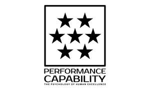
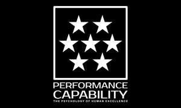

Trade Mark Journal No.2025/013 28 March 2025
UK00004171127 10 March 2025 (18,25,41)
Mark 1

Mark 2
Mark 3

Mark 4
- Class 18
- Bags; Tote bags; Luggage bags; Duffle bags; Duffel bags; Carry-on bags; Toiletry bags; Bags for clothes; Drawstring bags; Carry-all bags; Belt bags and hip bags; Carrying bags; Grocery tote bags; Cross-body bags; Bags for umbrellas; Diaper bags; Luggage, bags, wallets and other carriers; Crossbody bags; Cloth bags; Bucket bags; Leather bags; Sling bags; Nappy bags; Canvas bags; Duffel bags for travel; Shoe bags; Belt bags; Clutch bags; Wheeled bags; Kit bags; Travel bags; Bags for travel; Souvenir bags; Garment bags; Messenger bags; Leather bags and wallets; Toilet bags; Shoulder bags; Make-up bags; Waterproof bags; Cosmetic bags; Reusable shopping bags; Makeup bags; Camping bags; Umbrella bags; Towelling bags; Courier bags; Bags for campers; Roll bags; Bags for carrying pets; Hand bags; Gym bags; Knitted bags; Bags [envelopes, pouches] of leather, for packaging; Bags [envelopes, pouches] for packaging of leather; Bags [envelopes, pouches] of leather for packaging; Travelling bags; Attaché bags; Cabin bags; Flight bags; Traveling bags; Overnight bags; Beach bags; Bags for climbers; Boot bags; Mesh shopping bags; Mesh bags for shopping; Leather shopping bags; Canvas shopping bags; Hiking bags; Knitting bags; Bum bags; Frames for bags [structural parts of bags]; Roller bags; Wash bags for carrying toiletries; Baby carrying bags; Nose bags; Suit bags; Hunting bags; Gladstone bags; Waist bags; Feed bags.
- Class 25
- Clothing; Knitwear [clothing]; Jackets [clothing]; Ready-to-wear clothing; Woolen clothing; Layettes [clothing]; Clothing layettes; Garments for protecting clothing; Linen clothing; Headbands [clothing]; Headbands for clothing; Gloves [clothing]; Gloves as clothing; Clothes; Aprons [clothing]; Kerchiefs [clothing]; Jerseys [clothing]; Shorts [clothing]; Denims [clothing]; Cashmere clothing; Capes (clothing); Oilskins [clothing]; Gabardines [clothing]; Leather clothing; Clothing of leather; Leather (Clothing of -); Silk clothing; Collars [clothing]; Parts of clothing, footwear and headgear; Veils [clothing]; Knitted clothing; Windproof clothing; Hoods [clothing]; Embroidered clothing; Wristbands [clothing]; Belts [clothing]; Belts for clothing; Bandeaux [clothing]; Rainproof clothing; Casual clothing; Waterproof clothing; Visors [clothing]; Jackets being sports clothing; Jackets (Stuff -) [clothing]; Stuff jackets [clothing]; Bottoms [clothing]; Playsuits [clothing]; Clothing for leisure wear; Ready-made clothing; Trunks being clothing; Latex clothing; Woven clothing; Infant clothing; Leisure clothing; Ties [clothing]; Drawers [clothing]; Drawers as clothing; Clothing for sports; Sports clothing; Athletic clothing; Clothing for children; Muffs [clothing]; Clothing for babies; Bodies [clothing]; Clothing for infants; Tops [clothing]; Clothing for cycling; Weatherproof clothing; Pockets for clothing; Water-resistant clothing; Fabric belts [clothing]; Triathlon clothing; Handwarmers [clothing]; Beach clothing; Clothing for skiing; Thermal clothing; Chaps (clothing); Cowls [clothing]; Men's clothing; Fishing clothing; Mitts [clothing]; Dance clothing; Braces for clothing; Plush clothing.
- Class 41
- Training; Training and further training consultancy; Coaching [training]; Education and training; Training courses; Vocational training; Training and instruction; Personnel training; Training consultancy; Training in yoga; Employment training; Training services; Education and training consultancy; Vocational skills training; Meditation training; Organisation of training seminars; Organisation of training courses; Organisation of training; Practical training; Advanced training; Training in catering; Education, teaching and training; Training of teachers; Providing of training; Providing training; Providing courses of training; Conducting training seminars; Sports training; Training in sports; Fitness training services; Training in philosophy; Instruction in weight training; Instructional and training services; Provision of training; Business training; Career and vocational training; Provision of training courses; Training courses (Provision of -); Continuous training; Conducting workshops [training]; Training in administration; Vocational training services; Life coaching (training); Postgraduate training courses; Personal coaching [training]; Computerised training; Exercise [fitness] training services; Fitness and exercise training services; Training of referees; Training and education services; Education and training services; Arranging of training courses; Aerobics training services; Adult training; Vocational training courses (Provision of -); Teacher training services; Workshops for training purposes; Residential training courses; Training of umpires; Provision of training and education; Provision of education and training; Computer training; Vocational skills training (Provision of -); Industrial training; Training services for personnel; Training in business skills; Practical training services; Instruction in circuit training; Personal trainer services [fitness training]; Educational and training services; Written training courses; Physical training services; Training in the use of computers; Computer education training; Strength and conditioning training; Arranging professional workshop and training courses; Training of swimming teachers; Courses (Training -) relating to management; Training of croupiers; Management training services; Training services for nurses; Voice training; Vocational education and training services; Consultancy relating to vocational skills training; Training in communication techniques; Training of financial personnel; Providing obstacle course training gym facilities; Training or education services in the field of life coaching; Staff training services; Physical fitness training services; Rental of training simulators; Personal development training; Training of sports teachers; Providing online training seminars; Arrangement of training courses in teaching institutes; Conducting training seminars for clients; Providing of continuous training courses; Recreation and training services; Providing of training, teaching and tuition; Provision of training courses in personal development; Training of toast-masters; Organisation of seminars relating to training; Practical training [demonstration]; Consultancy relating to physical fitness training; Career counselling [training and education advice]; Training related to nutrition; Arranging and conducting of training courses; Conducting training sessions on physical fitness online; Training services relating to fitness; Organising of business training; Education and training in the field of business management.
Performance Capability Group Limited